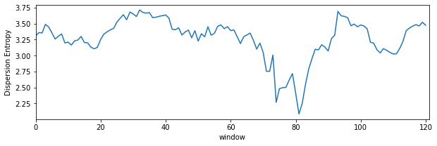

Dispersion Entropy
Contents
Dispersion Entropy
Dispersion Entropy¶
import numpy as np
import matplotlib.pyplot as plt
import sys, scipy
from scipy import linalg as LA
import spkit as sp
EEG Sample Signal¶
X,ch_names = sp.load_data.eegSample()
fs=128
X.shape
(2048, 14)
Xf = sp.filter_X(X,band=[1,20],btype='bandpass',verbose=0)
Xf.shape
(2048, 14)
t = np.arange(X.shape[0])/fs
plt.figure(figsize=(15,5))
plt.plot(t, Xf + np.arange(14)*200)
plt.xlim([0,t[-1]])
plt.show()
Dispersion Entropy¶
sp.dispersion_entropy
<function core.infomation_theory_advance.dispersion_entropy(x, classes=10, scale=1, emb_dim=2, delay=1, mapping_type='cdf', de_normalize=False, A=100, Mu=100, return_all=False, warns=True)>
Xi = Xf[:,0].copy() # only one channel
embeding diamension =2¶
de,prob,patterns_dict,_,_= sp.dispersion_entropy(Xi,classes=10, scale=1, emb_dim=2, delay=1,return_all=True)
de
2.271749287746759
Probability of all the patterns found¶
plt.stem(prob)
plt.xlabel('pattern #')
plt.ylabel('probability')
plt.show()
Pattern dictionary¶
patterns_dict
{(1, 1): 18,
(1, 2): 2,
(1, 4): 1,
(2, 1): 2,
(2, 2): 23,
(2, 3): 2,
(2, 5): 1,
(3, 1): 1,
(3, 2): 2,
(3, 3): 37,
(3, 4): 14,
(4, 2): 1,
(4, 3): 14,
(4, 4): 133,
(4, 5): 44,
(4, 9): 1,
(5, 3): 1,
(5, 4): 44,
(5, 5): 586,
(5, 6): 95,
(5, 7): 2,
(5, 8): 1,
(6, 5): 97,
(6, 6): 585,
(6, 7): 41,
(7, 5): 2,
(7, 6): 42,
(7, 7): 110,
(7, 8): 12,
(8, 4): 1,
(8, 7): 13,
(8, 8): 42,
(8, 9): 3,
(9, 8): 4,
(9, 9): 14,
(9, 10): 3,
(10, 9): 3,
(10, 10): 50}
top 10 patterns¶
PP = np.array([list(k)+[patterns_dict[k]] for k in patterns_dict])
idx = np.argsort(PP[:,-1])[::-1]
PP[idx[:10],:-1]
array([[ 5, 5],
[ 6, 6],
[ 4, 4],
[ 7, 7],
[ 6, 5],
[ 5, 6],
[10, 10],
[ 4, 5],
[ 5, 4],
[ 8, 8]], dtype=int64)
embedding diamension 4¶
de,prob,patterns_dict,_,_= sp.dispersion_entropy(Xi,classes=20, scale=1, emb_dim=4, delay=1,return_all=True)
de
4.866373893367994
PP = np.array([list(k)+[patterns_dict[k]] for k in patterns_dict])
idx = np.argsort(PP[:,-1])[::-1]
PP[idx[:10],:-1]
array([[10, 10, 10, 10],
[11, 11, 11, 11],
[12, 12, 12, 12],
[ 9, 9, 9, 9],
[11, 11, 10, 10],
[10, 10, 11, 11],
[11, 11, 11, 10],
[10, 10, 10, 11],
[10, 11, 11, 11],
[11, 10, 10, 10]], dtype=int64)
top-10, non-constant pattern¶
Ptop = np.array(list(PP[idx,:-1]))
idx2 = np.where(np.sum(np.abs(Ptop-Ptop.mean(1)[:,None]),1)>0)[0]
plt.plot(Ptop[idx2[:10]].T,'--o')
plt.xticks([0,1,2,3])
plt.grid()
plt.show()
plt.figure(figsize=(15,5))
for i in range(10):
plt.subplot(2,5,i+1)
plt.plot(Ptop[idx2[i]])
plt.grid()
#plt.yticks([])
Dispersion Entropy with sliding window¶
de_temporal = []
win = np.arange(128)
while win[-1]<Xi.shape[0]:
de,_ = sp.dispersion_entropy(Xi[win],classes=10, scale=1, emb_dim=2, delay=1,return_all=False)
win+=16
de_temporal.append(de)
plt.figure(figsize=(10,3))
plt.plot(de_temporal)
plt.xlim([0,len(de_temporal)])
plt.xlabel('window')
plt.ylabel('Dispersion Entropy')
plt.show()

Dispersion Entropy multiscale¶
for scl in [1,2,3,5,10,20,30]:
de,_ = sp.dispersion_entropy(Xi,classes=10, scale=scl, emb_dim=2, delay=1,return_all=False)
print(f'Sacle: {scl}, \t: DE: {de}')
Sacle: 1, : DE: 2.271749287746759
Sacle: 2, : DE: 2.5456280627759336
Sacle: 3, : DE: 2.6984938704051236
Sacle: 5, : DE: 2.682837351130069
Sacle: 10, : DE: 2.5585556625642476
Sacle: 20, : DE: 2.7480275694000103
Sacle: 30, : DE: 2.4767472897625806
Dispersion Entropy multiscale-refined¶
de,_ = sp.dispersion_entropy_multiscale_refined(Xi,classes=10, scales=[1, 2, 3, 4, 5], emb_dim=2, delay=1)
de
2.543855087400606
Documentation¶
help(sp.dispersion_entropy)
Help on function dispersion_entropy in module core.infomation_theory_advance:
dispersion_entropy(x, classes=10, scale=1, emb_dim=2, delay=1, mapping_type='cdf', de_normalize=False, A=100, Mu=100, return_all=False, warns=True)
Calculate dispersion entropy of signal x (multiscale)
----------------------------------------
input:
-----
x : input signal x - 1d-array of shape=(n,)
classes: number of classes - (levels of quantization of amplitude) (default=10)
emb_dim: embedding dimension,
delay : time delay (default=1)
scale : downsampled signal with low resolution (default=1) - for multipscale dispersion entropy
mapping_type: mapping method to discretizing signal (default='cdf')
: options = {'cdf','a-law','mu-law','fd'}
A : factor for A-Law- if mapping_type = 'a-law'
Mu : factor for μ-Law- if mapping_type = 'mu-law'
de_normalize: (bool) if to normalize the entropy, to make it comparable with different signal with different
number of classes and embeding dimensions. default=0 (False) - no normalizations
if de_normalize=1:
- dispersion entropy is normalized by log(Npp); Npp=total possible patterns. This is classical
way to normalize entropy since max{H(x)}<=np.log(N) for possible outcomes. However, in case of
limited length of signal (sequence), it would be not be possible to get all the possible patterns
and might be incorrect to normalize by log(Npp), when len(x)<Npp or len(x)<classes**emb_dim.
For example, given signal x with discretized length of 2048 samples, if classes=10 and emb_dim=4,
the number of possible patterns Npp = 10000, which can never be found in sequence length < 10000+4.
To fix this, the alternative way to nomalize is recommended as follow.
- select this when classes**emb_dim < (N-(emb_dim-1)*delay)
de_normalize=2: (recommended for classes**emb_dim > len(x)/scale)
- dispersion entropy is normalized by log(Npf); Npf [= (len(x)-(emb_dim - 1) * delay)]
the total number of patterns founds in given sequence. This is much better normalizing factor.
In worst case (lack of better word) - for a very random signal, all Npf patterns could be different
and unique, achieving the maximum entropy and for a constant signal, all Npf will be same achieving to
zero entropy
- select this when classes**emb_dim > (N-(emb_dim-1)*delay)
de_normalize=3:
- dispersion entropy is normalized by log(Nup); number of total unique patterns (NOT RECOMMENDED)
- it does not make sense (not to me, at least)
de_normalize=4:
- auto select normalizing factor
- if classes**emb_dim > (N-(emb_dim-1)*delay), then de_normalize=2
- if classes**emb_dim > (N-(emb_dim-1)*delay), then de_normalize=2
output
------
disp_entr : dispersion entropy of the signal
prob : probability distribution of patterns
if return_all True - also returns
patterns_dict: disctionary of patterns and respective frequencies
x_discrete : discretized signal x
(Npf,Npp,Nup): Npf - total_patterns_found, Npp - total_patterns_possible) and Nup - total unique patterns found
: Npf number of total patterns in discretized signal (not total unique patterns)
help(sp.dispersion_entropy_multiscale_refined)
Help on function dispersion_entropy_multiscale_refined in module core.infomation_theory_advance:
dispersion_entropy_multiscale_refined(x, classes=10, scales=[1, 2, 3, 4, 5], emb_dim=2, delay=1, mapping_type='cdf', de_normalize=False, A=100, Mu=100, return_all=False, warns=True)
Calculate multiscale refined dispersion entropy of signal x
-----------------------------------------------------------
compute dispersion entropy at different scales (defined by argument - 'scales') and combining the patterns
found at different scales to compute final dispersion entropy
input:
-----
x : input signal x - 1d-array of shape=(n,)
classes : number of classes - (levels of quantization of amplitude) (default=10)
emb_dim : embedding dimension,
delay : time delay (default=1)
scales : list or 1d array of scales to be considered to refine the dispersion entropy
mapping_type: mapping method to discretizing signal (default='cdf')
: options = {'cdf','a-law','mu-law','fd'}
A : factor for A-Law- if mapping_type = 'a-law'
Mu : factor for μ-Law- if mapping_type = 'mu-law'
de_normalize: (bool) if to normalize the entropy, to make it comparable with different signal with different
number of classes and embeding dimensions. default=0 (False) - no normalizations
if de_normalize=1:
- dispersion entropy is normalized by log(Npp); Npp=total possible patterns. This is classical
way to normalize entropy since max{H(x)}<=np.log(N) for possible outcomes. However, in case of
limited length of signal (sequence), it would be not be possible to get all the possible patterns
and might be incorrect to normalize by log(Npp), when len(x)<Npp or len(x)<classes**emb_dim.
For example, given signal x with discretized length of 2048 samples, if classes=10 and emb_dim=4,
the number of possible patterns Npp = 10000, which can never be found in sequence length < 10000+4.
To fix this, the alternative way to nomalize is recommended as follow.
de_normalize=2: (recommended for classes**emb_dim > len(x)/scale)
- dispersion entropy is normalized by log(Npf); Npf [= (len(x)-(emb_dim - 1) * delay)]
the total number of patterns founds in given sequence. This is much better normalizing factor.
In worst case (lack of better word) - for a very random signal, all Npf patterns could be different
and unique, achieving the maximum entropy and for a constant signal, all Npf will be same achieving to
zero entropy
de_normalize=3:
- dispersion entropy is normalized by log(Nup); number of total unique patterns (NOT RECOMMENDED)
- it does not make sense (not to me, at least)
output
------
disp_entr : dispersion entropy of the signal
prob : probability distribution of patterns
if return_all True - also returns
patterns_dict: disctionary of patterns and respective frequencies
x_discrete : discretized signal x
(Npf,Npp,Nup): Npf - total_patterns_found, Npp - total_patterns_possible) and Nup - total unique patterns found
: Npf number of total patterns in discretized signal (not total unique patterns)